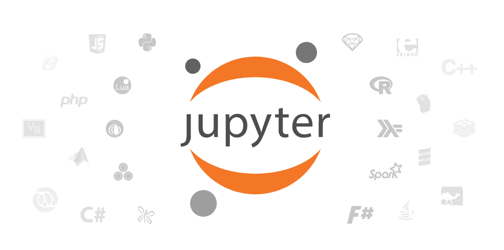
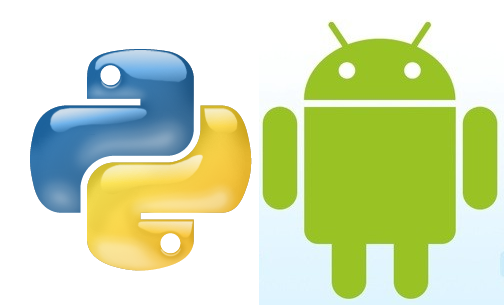

El material contenido en este repositorio corresponde al curso de Tópicos Selectos en Aplicaciones Distribuidas Móviles ofrecido como parte del Diplomado de la RySI, modalidad presencial y en línea. El curso tiene como objetivo ofrecer un punto de entrada y una vista general del ecosistema de programación y desarrollo de Jupyter para el prototipado de aplicaciones móviles distribuidas desplegadas en dispositivos basados en Android.
Android es tradicionalmente un sistema operativo exclusivamente dedicado a Java. Sin embargo, este lenguaje de programación no permite la flexibilidad que se requiere para un desarrollo ágil de prototipos móviles. El Scripting Layer for Android (SL4A) es una librería para la plataforma de Android con soporte para una variedad de lenguajes interpretados con los que se pueden ejecutar scripts, tales como Perl, Python, JRuby, PHP etc.
La tecnología que se utilizará durante el curso se basa en el ecosistema de programación de Jupyter a través de la cual aprenderán a interactuar directamente con el dispositivo, por medio de la SL4A, y a desarrollar aplicaciones que pueden ejecutarse completamente en el dispositivo.
Además se utilizara el ecosistema de Jupyter utilizando el ambiente alojado en la nube para aprender los fundamentos del desarrollo de aplicaciones de Aprendizaje de Máquina que pueden desplegarse en los dispositivos móviles.
Ecosistema de desarrollo de Jupyter

Jupyter es un ecosistema de desarrollo y creación de documentos digitales basado en Python, llamados Libretas de Jupyter. Los documentos pueden contener información legible para los humanos así como contenido digital (código, ejecutable, etc) interpretado por una máquina.
La aplicación que permite editar y ejecutar libretas de Jupyter se conoce como Jupyter Notebook App. Esta semana aprenderemos como instalar y ejecutar diversas instancias de la aplicación para crear y editar libretas, a través de las cuales podremos interactuar con un dispositivo móvil
Python para Android
Es posible instalar el intérprete de Python y ejecutar script usando este lenguaje en dispositivos móviles. En Android se logra a través del Scripting Layer 4 Android. Esta semana aprenderemos también cómo instalar y ejecutar este servicio en un móvil sobre la plataforma Android para ejecutar código de Python creado en la aplicación de Jupyter.
Que aprenderán?
- Cómo instalar y configurar Python a partir de la distribución de Anaconda en sus computadoras personales
- Cómo ejecutar código de Python y escribir texto en una libreta de Jupyter Notebooks
- Cómo instalar Python en un dispositi móvil con Android
- Cómo ejecutar código en un dispositivo móvil con Android y Python
- Conceptos básicos de Aprendizaje de Maquina
- Cómo entrenar un algortimo de aprendizaje para reconocimiento de objetos en imágenes
- Cómo desplegar un algoritmo de aprendizaje en el dispositivo móvil
Qué necesitarán?
El curso está organizado en tres partes, cada una de ellas correspondiente a una semana, dentro de las cuales
- El participante conocerá el ecosistema de programación de Jupyter y en particular el lenguaje de programación Python y cómo utilizarlo para interactuar con dispositivos móviles basados en el SO Android
- el participante desarrollará y desplegará aplicaciones básicas que le permitirán acceder a diferentes componentes del sistema e interactuar con el dispositivo, p.e. antenas, sensores, lectura de clipboard, etc.
- el participante implementará un algoritmo de reconocimiento de imágenes y utilizará el dispositivo móvil como herramienta de adquisición y procesamiento de datos.
El curso está basado en la tecnología de libretas de Jupyter y está disponible en un repositorio en Github. El contenido semanal puede accederse directamente desde la página oficial del curso o desde el repositorio anterior.
Cada libreta contiene la información específica del trabajo que va a realizarse durante la semana organizado como a continuación se describe:
- Introducción al tema de la semana
- Objetivos de aprendizaje de la semana
- Requerimentos técnicos para la semana (software/hardware adicional, etc.)
- Actividades/Libretas correspondientes a la semana
- Material adicional y
- Enlaces externos.
Para más información sobre el contenido de cada semana, ver más adelante.
Semana 1
- Configuración de las herramientas de trabajo
Semana 2
- Introducción a la API de Python en Android
Semana 3
- Desarrollo de una aplicación basada en el Aprendizaje de Máquina basada en TensorFlow
- Despliegue de la aplicación en el dispositivo móvil
El curso será evaluado de acuerdo a los siguientes criterios:
Actividad/Producto | Sesión | Valor | Total |
Ejercicios/Libretas | |||
S1_L# | Semana 1 | 15% | |
S2_L# | Semana 2 | 15% | |
S3_L# | Semana 3 | 20% | 50% |
Aplicaciones | |||
S1_A1 | Semana 1 | 10 % | |
S2_A2 | Semana 2 | 10% | |
S3_A3 | Semana 3 | 10% | 30% |
Proyecto Final | 10% | ||
Asistencia | 10% | ||
100% |
Ejercicios/Libretas
El contenido del curso está organizado en Libretas de Jupyter, entre 3 y 5 libretas por semana, que contienen las actividades y ejercicios que comprenden el curso. Las competencias se van construyendo de manera gradual por lo que es importante que se realicen las actividades en todas y cada una de las libretas desde el inicio. La primera semana es fundamental para tener el sistema funcionando, de otro modo no podrán realizar los ejercicios/actividades de las siguientes sesiones, especialmente la segunda semana. Las actividades y ejercicios contenidos en las libretas representan el 50% de la calificación.
Aplicaciones
Al término de cada sesión deberán completar una aplicación, detallada en las libretas de la semana correspondiente. Cada aplicación contribuye con un 10% adicional a la calificación.
Ejemplo
Si terminan todos los ejercicios de la primera semana, es decir si completan exitosamente todas las actividades de las libretas de la semana 1, habrán acumulado 15%. Si entregan la aplicación de la semana sumarán otro 10%, y dado que estarán presentes un ⅓ del 10% correspondiente a la asistencia. Asi, sumarían en la primera semana 28.3333% de la calificación total.
Si tienen interés en aprender a desarrollar prototipos de aplicaciones móviles usando diversas tecnologías, este curso ofrece las bases con las que pueden desarrollarse aplicaciones más complejas. El participante deberá cubrir algunos de los siguientes campos:
Perfil | Profesionales del área de TIC o afines, ingenierías, ciencias, programación |
Conocimientos previos |
|
Habilidades |
|
Actitudes |
|
Para este curso es fundamental contar con una computadora moderna corriendo un sistema operativo reciente, y un dispositivo móvil compatible con Android >= 4
El curso está enfocado en el uso de Python por su flexibilidad, sencillez y soporte. Además de ser software libre, Python es uno de los principales lenguajes utilizados en la naciente disciplina de la Ciencia de Datos.
Será deseable que el participante con alguna experiencia en programación de lenguajes interactivos como Python, aunque no es necesaria.
Será de utilidad que el participante tenga conocimiento basico de interacción con sistemas operativos a través de la linea de comando.
Experiencia con los principios fundamentales del Aprendizaje de Máquina e Inteligencia Artificial modernos es útil aunque no es fundamental ya que se espera que al término del curso el participante se lleve las bases.
Aun cuando Google proporciona una herramienta sólida para el desarrollo de software para dispositivos android (SDK), ésta está orientada a Java, y cuando todo lo que queremos hacer es un script sencillo para automatizar tareas o procesos en android, o incluso para el desarrollo rápido y ágil de aplicaciones, el uso de Java puede ser tedioso con el diseño de programación tradicional de editar-compilar-ejecutar.
Para estos casos el uso de un lenguaje programación interpretado puede acelerar el desarrollo de aplicaciones, y es aquí donde el proyecto del Scripting Layer 4 Android, o SL4A, se vuelve una herramienta útil para escribir código para dispositivos móviles con android y en lenguajes diferentes a Java y hacerlo de una forma interactiva.
Al momento de preparar este curso el SL4A soporta Beanshell, JRuby, Lua, Perl, PHP, Python y Rhino. El curso está enfocado en el uso de Python por su flexibilidad, sencillez y soporte a través de una gran comunidad de múltiples disciplinas que contribuyen a su desarrollo. Además de ser software libre, Python es uno de los principales lenguajes utilizados en la naciente disciplina de la Ciencia de Datos.
Objetivos de aprendizaje
- Conocer el proceso de instalación y configuración del ecosistema de Jupyter en su computadora personal
- Configurar los sistemas para establecer una comunicación interactiva entre Jupyter y Android
- Configurar una aplicación de Jupyter en la nube para ejecutarse en un entorno local
Qué haremos
Vamos a instalar y configurar las herramientas necesarias para contar con un ambiente de desarrollo flexible y ágil para desarrollar prototipos de aplicaciones móviles usando el lenguaje de programación Python Al final de la semana habrán:
|
|


What you'll learn
- Cómo instalar y configurar Jupyter en una computadora personal
- Cómo instalar y configurar Python en un dispositivo móvil
- Cómo configurar el sistema para conectarse al dispositivo móvil
- Cómo interactuar con el dispositivo móvil usando Pytho
Que vamos a necesitar
- Una computadora personal con un sistema operativo funcional
- Una dispositivo móvil con Android >= 4
- Un cable USB de transferencia de datos
- Acceso al repositorio del curso en Github
- Anaconda Python
- Scripting Layer 4 Android
- Python for Android
- Google Collaborative
Actividades/Libretas
Cada semana se compone de una serie de laboratorios que deben seguir para poder configurar el sistema de trabajo. Cada laboratorio contiene una serie de pasos con instrucciones que deberán seguir y completar. Algunos de los pasos los llevarán a sitios externos (en el internet o en su computadora local).
Los laboratorios que contienen las actividades de esta semana son:
- Instalación local de Jupyter vía Anaconda
- Instalación/configuración local de
adb - Instalación y configuración local del módulo
android.py - Configuración del ecosistema de Jupyter en la nube
- Instalación de Python en el dispositivo móvil
- Comunicación entre el dispositivo móvil y el sistema local
El lenguaje programación interpretado Python permite acceder a una variedad de funciones del SO de Android a través de llamados especiales que se conocen como fachadas. En esta semana vamos a explorar ésta API, disponible para interactuar con el SO y crear aplicaciones que pueden desarrollarse localmente y ejecutarse de manera remota.
Objetivos de aprendizaje
- Conocer la API de Android disponible en el SL4A
- Interactuar con el dispositivo móvil de manera remota
- Desarrollar una aplicación interactivamente y desplegarla en el dispositivo
- Conocer los posibles errores que pueden presentarse en el desarrollo y ejecución de aplicaciones usando SL4Al
Qué haremos
Vamos a conocer la API de Python en Android a través de las fachadas disponibles en el SL4A para desarrollar aplicaciones simples e interactivas desde nuestra computadora pero que se ejecutan directamente en el dispositivo móvil. Para ello vamos a aprender a establecer conexiones entre el sistema local y el dispositivo, usar la API de Python para acceder a (la mayoría de) las funciones de Android y desarrollar aplicaciones que usen éstas funciones. Al final de la semana habrán:
| 
|
What you'll learn
- Cómo establecer una conexión entre Android y Python
- Como ejectuar codigo de Python en Android interactvamente
- Como usar la API de Python en Android para crear aplicaciones simples
- Cuales son los principales errores que ocurren al usar esta tecnología y como corregirlos
Que vamos a necesitar
- Una computadora personal con la configuración de la semana 1
- Una dispositivo móvil con Android >= 4
- Un cable USB de transferencia de datos
Actividades/Libretas
Los laboratorios que contienen las actividades de esta semana son:
- Como establecer una conexion entre Android y el sistema local usando adb
- Comunicación entre Python y dispositivo móvil
- Uso básico de la API: interacción con usuario, papelera, antenas, sensores, etc.
Una de las técnicas modernas que han generado un enorme desarrollo tecnológico son las redes neuronales. En esta sesión vamos a utilizar conceptos de redes neuronales para desarrollar una aplicación que podemos desplegar y usar en nuestro dispositivo móvil y veremos como utlizarla en el contexto de Python y Android.
Objetivos de aprendizaje
- Conocer los conceptos básicos de redes neuronales
- Conocer un flujo de desarrollo completo de una aplicación de aprendizaje de máquina, desde su concepción hasta el despliegue.
- Entrenar una red neuronal con un modelo de identificación de imágenes con Python
- Ejecutar la aplicación en Android
Qué haremos
Vamos a construir una aplicación que es capaz de reconocer objetos en imágenes capturadas con la cámara del dispositivo. Para ello, veremos como entrenar un modelo para que "aprenda" a clasificar a partir de un conjunto de entrenamiento que le damos. Usaremos la tecnología de Google Colab que nos permite emplear procesadores gráficos y acelerar el proceso de desarrollo de la aplicación. |
What you'll learn
- Como usar TensorFlow para re-entrenar una red neuronal
- Como desarrollar una aplicación a partir de un modelo basado en redes neuronales
- Cómo desplegar la aplicación en el dispositivo usando Android Studio
- Cómo acceder a la aplicación programáticamente con Python
Que vamos a necesitar
- Una computadora personal con la configuración de la semana 1
- Una dispositivo móvil con Android >= 4
- Un cable USB de transferencia de datos
- Acceso a Internet
- Android Studio
Actividades/Libretas
Los laboratorios que contienen las actividades de esta semana son:
- Conceptos elementales de redes neuronales
- (Re)entrenando una red neuronal con TensorFlow
- Instalando aplicación en dispositivo móvil con Android Studio
|
htapia@lania.edu.mx Tel. +52 228 841-6100 ext. 1011 | Horacio Tapia-McClung es profesor/investigador del LANIA especializado en el análisis de grandes datos utilizando métodos de cómputo avanzado que permitan el procesamiento en tiempo real y con recursos limitados. También desarrolla y aplica técnicas para el análisis de imágenes usando procesadores gráficos (Redes Neuronales Convolucionales, Deep Learning, análisis morfológico) y utiliza principios y fundamentos fisicos y matematicos para analizar y estudiar sistemas complejos espacio-temporales. Algunas de las aplicaciones que ha desarrollado incluyen modelos de falla para motores de diesel, análisis de color en imágenes digitales, estudios sobre movilidad a partir de datos de geolocalización, adquisición y análisis de datos usando dispositivos móviles, aplicaciones del internet de las cosas, entre otros. Trabaja de cerca con empresas de diversos sectores industriales en temas relacionados al análisis de datos para impulsar la creación de valor a partir de la información digital. Es fundador y organizador del evento Data Challenge Industrial, una competencia de análisis de datos provenientes de la industria nacional. |